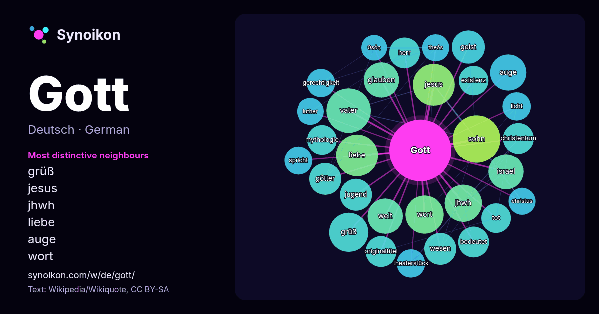

Deutsch · beliebtes Wort
Gott
“god” · Die Wörter in seinem Umfeld aus 1201 Vorkommen in Wikipedia, Wikiquote.

Typischste Nachbarn
- grüß 22×
- jesus 21×
- jhwh 20×
- liebe 19×
- auge 17×
- wort 16×
- glauben 15×
- israel 15×
- götter 14×
- geist 14×
- wesen 14×
- vater 13×
- christentum 13×
- originaltitel 13×
- herr 12×
- tot 12×
- mythologie 12×
- existenz 12×
- theaterstück 12×
- gerechtigkeit 11×
× = wie viel häufiger als in allgemeinem Wikipedia-Text.
Häufigste Nachbarn
- sohn 31
- vater 27
- jesus 24
- liebe 24
- grüß 21
- wort 20
- jhwh 19
- leben 19
- auge 18
- namen 18
- glauben 17
- israel 17
- welt 17
- geist 15
- götter 14
- jugend 14
- wesen 14
- bedeutet 13
- christentum 13
- deutsch 13
Im Kontext
- Als Gott (weiblich: Göttin) oder Gottheit (abrahamitisch: semitische Wurzel א–ל–ה, vgl. El, Elohim, Allah) wird meist ein übernatürliches Geistwesen bezeichnet Wikipedia snippets · Gott
- Gott steht für: Gott oder Gottheit, übernatürliches Wesen oder höhere Macht Gott (Christentum), christliche Vorstellungen von Gott Gott (Theaterstück) Wikipedia snippets · Gott (Begriffsklärung)
- Theologie die Wesenseinheit Gottes in drei Personen oder Hypostasen, nicht drei Substanzen. Diese werden „Vater“ (Gott der Vater, Gott Vater oder Gottvater) Wikipedia snippets · Trinität
- Jeder für sich und Gott gegen alle ist ein deutscher Spielfilm von Werner Herzog aus dem Jahr 1974 über das Leben Kaspar Hausers. Der Film erzählt die Wikipedia snippets · Jeder für sich und Gott gegen alle
- Gott mit uns (lateinisch: Nobiscum deus) ist ein Zitat aus dem Bibelvers Matthäus 1,23 LUT. Es diente seit 1861 als Wahlspruch des Königs Wilhelm I. von Wikipedia snippets · Gott mit uns
- Ehemann, König oder Gott. Baal war ein Titel, der für jeden Gott verwendet werden konnte. Als Baal wird gewöhnlich der oberste Gott des örtlichen Pantheons Wikipedia snippets · Baal (Gott)
- Karel Gott (* 14. Juli 1939 in Pilsen; † 1. Oktober 2019 in Prag) war ein tschechischer Sänger, Komponist, Schauspieler und Maler. Der im deutschsprachigen Wikipedia snippets · Karel Gott
- höchsten Gottes der Ugariter im 2. vorchristlichen Jahrtausend. Sein Name wurde durch die Israeliten übernommen und mit JHWH (יהוה), ihrem einzigen Gott im Wikipedia snippets · El (Gott)
Weitere Wörter
- Arbeit
- Brücke
- Essen
- Familie
- Geld
- Geschichte
- Gesundheit
- Gold
- Kunst
- Leben
- Macht
- Natur
- Tod
- Wahrheit
- Wasser
- Wissenschaft
- Zug
Vorberechnet am 2026-10-09 mit Standardeinstellungen (±5 Wörter, mittlerer Korpus). Die interaktive Karte kann mit Live-Daten aktualisieren.
Maschinell übersetzte Oberfläche; Korrekturen willkommen.